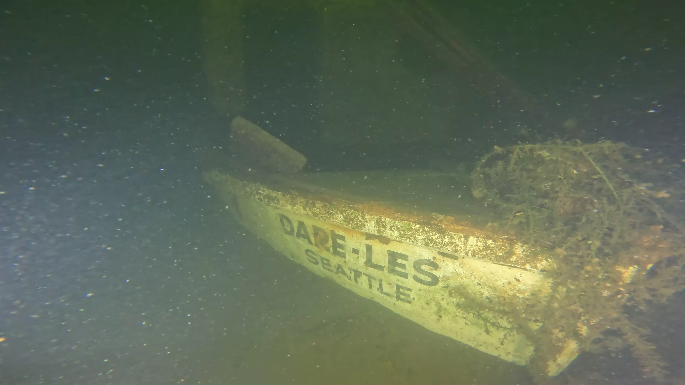

All documented targets, click on each to learn more and view photos.
| ID# | Name | Type | Depth | Description | Status |
|---|
The master archive is maintained as a structured CSV spreadsheet and updated as new data is available. It includes all survey data, source references, footage status, and field notes for every cataloged target in Lake Union and connected waterways.
The Archive Dataset has not been fully verified and is a working document with inaccuracies. At the end of the document, it will be reviewed for accuracy and officially released.
Download CSV| Field | Description |
|---|---|
| Target Identity | |
| target_no | Unique catalog number (e.g. LU001). Assigned sequentially from the CSS sonar survey baseline. |
| target_name | Known vessel name, if positively identified. Nicknames indicated with '***'. Otherwise Unknown. |
| type | General vessel category (Shipwreck, Debris, Infrastructure, Vehicle, or Unknown). |
| subtype | More specific classification where known (e.g. Landing Craft, Sailboat, Dock section). |
| material | Hull construction material (Wood, Metal, Fiberglass, Unknown, etc.). |
| Location & Physical | |
| longitude | GPS coordinate in decimal degrees (WGS84). Derived from sonar survey centroid. |
| latitude | GPS coordinate in decimal degrees (WGS84). Derived from sonar survey centroid. |
| depth_ft | Depth to wreck in feet, measured at the shallowest point of the hull. |
| dimensions_ft | Estimated length × beam (width) in feet. Diver measurements or side scan estimate (where both are available, diver taken as truth). ROV surveys did not contribute to dimensions. |
| target_description | Brief free-text summary description of the target. |
| Coastal Sensing and Survey (High-Resolution Side Scan Survey) | |
| css_surveyed | Whether this target appeared in the CSS side-scan sonar survey of Lake Union. |
| css_survey_date | Date the CSS sonar survey was conducted for this target. |
| css_dimensions | Dimensions as measured from CSS sonar data. |
| css_historically_explored | Whether CSS records indicate prior historical exploration of this target (CSS themselves only explored JE Boyden with an ROV). |
| css_description | These are the original target names from the CSS survey log. |
| css_url | Link to the CSS public survey record for this target. |
| DCS Films (Scuba Dive Records) | |
| dcs_target_no | DCS Films' internal target reference number, where applicable. |
| dcs_scuba_footage | Whether DCS Films captured scuba dive footage of this target. |
| dcs_scuba_date | Date DCS Films conducted their scuba dive on this target. |
| dcs_dimensions | Dimensions recorded by DCS divers during in-water survey. The values are considered more accurate than side scan measurement. |
| dcs_notes | Notes of names and dimensions from start of DCS Films videos (more information exists at their url). |
| dcs_url | Link to DCS Films footage and/or historical documentation for this target. |
| Shipwreck City (ROV Dives) | |
| sc_current_footage_status | Current exploration status: No Footage (no public footage is available or known), Historical Footage (footage available from DCS or other source), Updated Footage (SC completed an ROV dive to update Historical Footage), First Footage (SC completed an ROV dive where no footage was available).. |
| sc_initial_footage_status | Footage status before Shipwreck City involvement — establishes the baseline before work started. |
| sc_newly_uncovered | Yes if this target was not present in any prior survey and was first logged by the Shipwreck City effort. |
| sc_rov_dive_duration | Duration of Shipwreck City ROV dive in hours. |
| sc_rov_dive_date | Date of the Shipwreck City ROV dive. |
| sc_notes | Shipwreck City field notes, observations, and identification context. |
| sc_url | Link to Shipwreck City footage or documentation for this target. |
| sc_howto_access | Nearest access point to visit target (Specific marina or via Boat). |